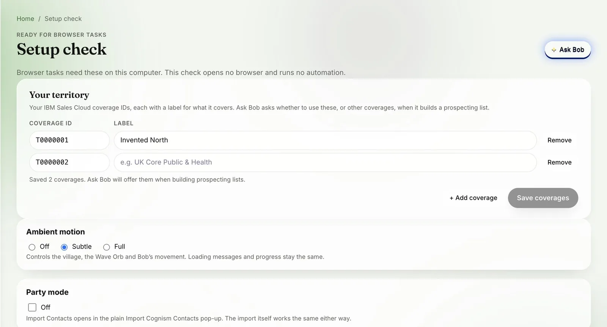
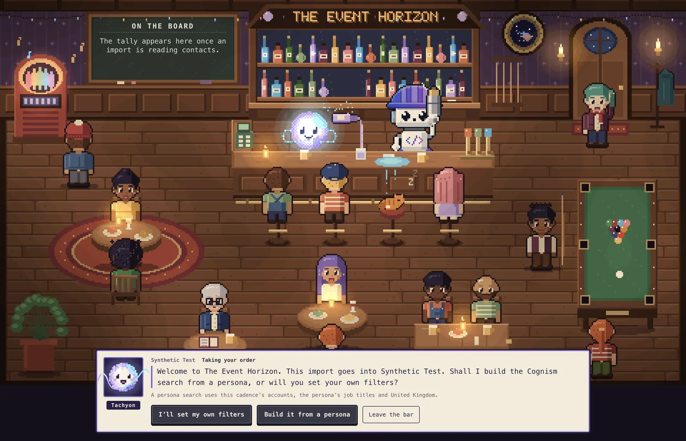
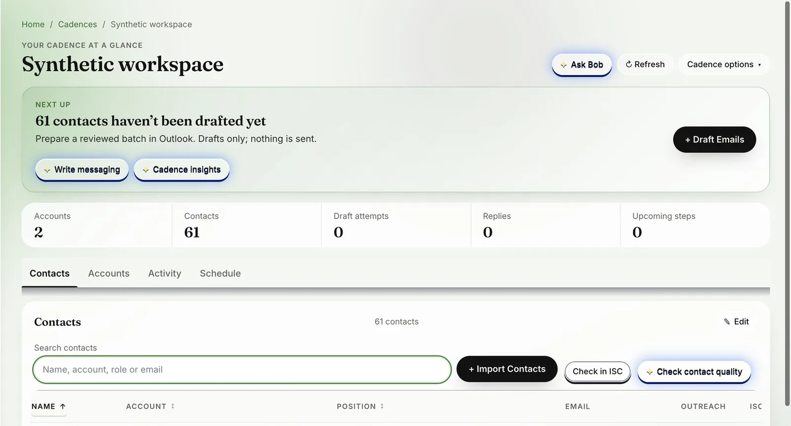
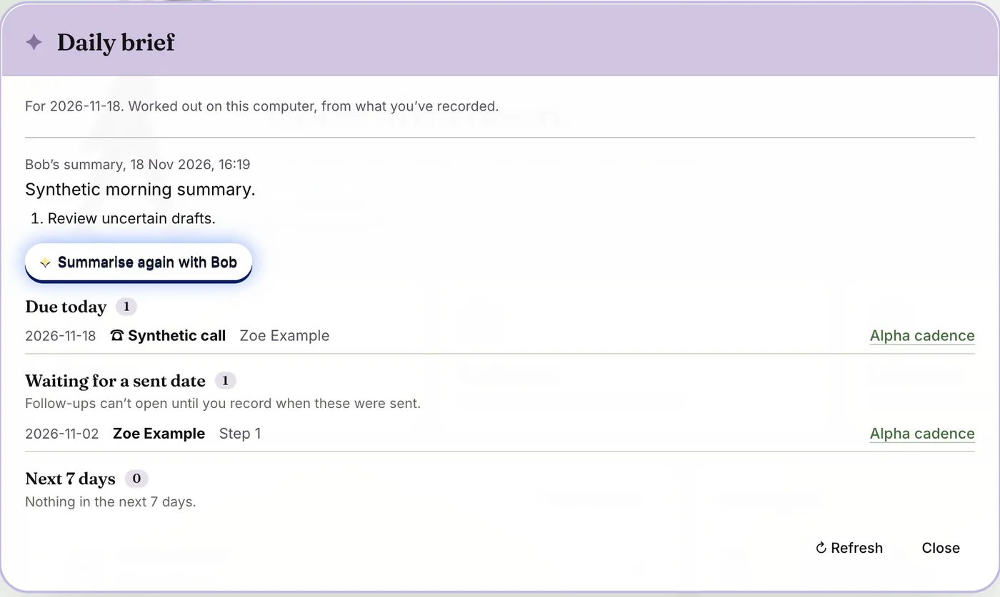
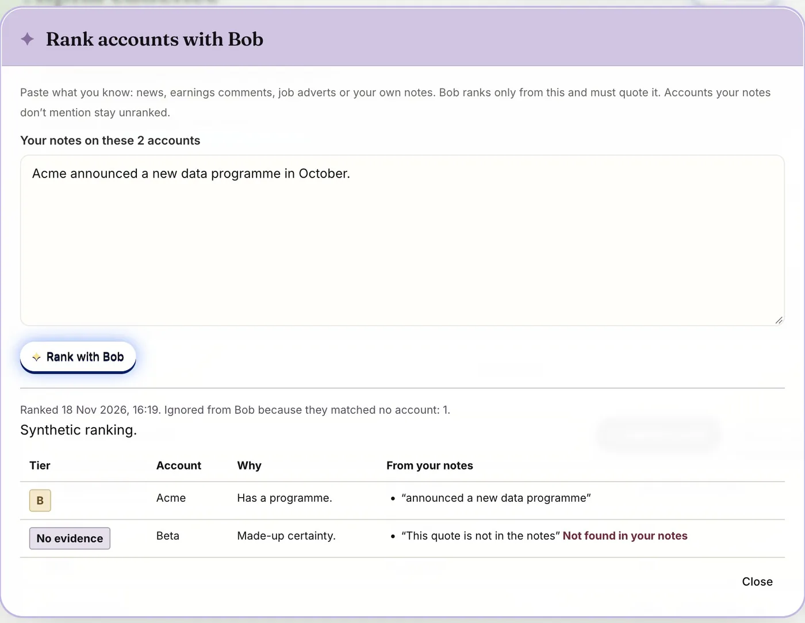
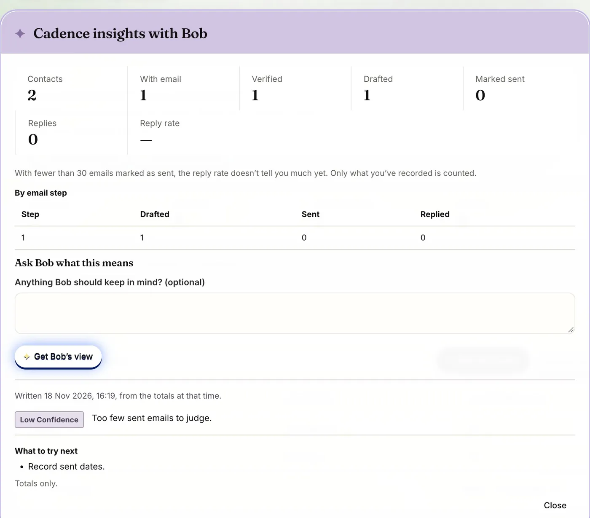
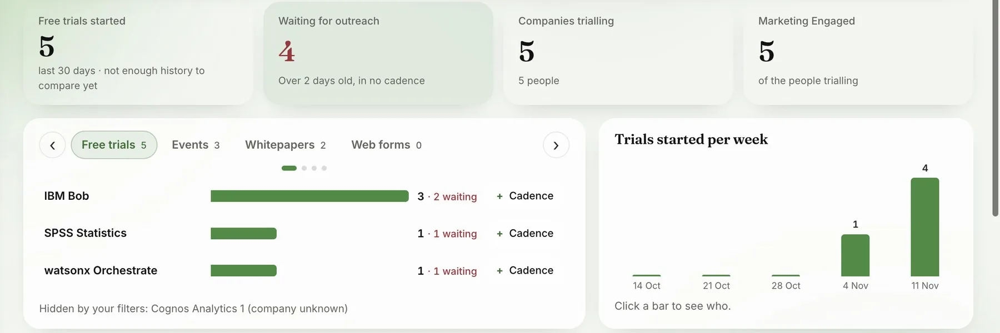
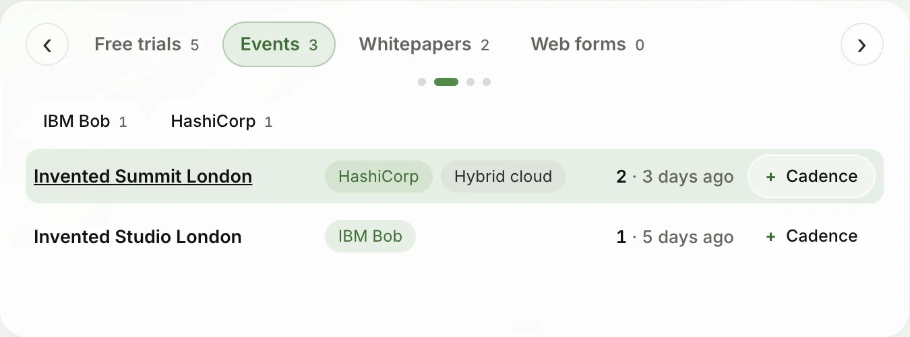
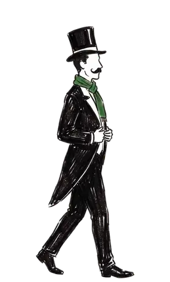

The problem
Outreach lives in five tools, and the glue is copy and paste
- IBM Sales CloudTerritories, accounts, leads and sales plays.
- CognismThe people at those accounts.
- OutlookWhere every first email is written, one by one.
- SalesloftCalls, steps and what’s due next.
- SpreadsheetsWhere lists get exported, cleaned and imported again.
Meanwhile, free-trial leads wait, and the trial clock keeps ticking.
The workflow
One cadence, start to finish
A cadence is one campaign: the companies you’re going after, the people in them, and everything you do to reach them. Every step writes to the cadence’s own files, so you can stop, check and carry on.
-
Add your accounts
Save your territory’s coverage IDs once, then bring accounts in from a territory or a prospecting list in IBM Sales Cloud. Each account shows the sales plays recommended for it, so the first email has a reason.

-
Find the people
The workspace turns into The Event Horizon, a bar where imports are ordered, not configured. Pick your own Cognism filters or a persona, say how many pages, and watch the chalkboard count every contact the import confirms. New people merge by email; nothing is overwritten.

-
Check before you contact
Every cadence opens on what’s next. Look each contact up in IBM Sales Cloud first: bounced, opted out, or already in a Salesloft cadence with a step due. Gaps and uncertain matches are flagged for review, never guessed.

-
Write, then draft
Bob drafts the angle and you edit it. See every email as it will be drafted: recipients, subject and message, with the step it belongs to. Outlook saves them as drafts, and you read them and press Send yourself.
“Drafts created — check your drafts.”
Drafted, sent, replied, failed, skipped and uncertain are kept as separate states. Uncertain attempts wait for your review before anything is retried.
-
Follow up on time
Record when emails were actually sent, and the next calls and emails land in one calendar across every cadence. Log your calls once, and they go to Salesloft once, even if something goes wrong halfway.
Follow-ups start from a confirmed sent date, never from a draft alone.
Ask Bob
Ask in plain words, and Bob opens the right place
How many trials started this month?
Counts by product, how many are waiting, and when your leads were last read. Want a cadence for them?
Make a prospecting list of universities in my territory.
I’ll create it in IBM Sales Cloud with your coverage IDs. Check it before I add anything.

Daily brief
Due today, what’s waiting, and the week ahead.

Rank accounts
Tiers from your own notes, each with its quote. No quote, no rank.

Cadence insights
Results by step, and how sure Bob is.
Bob only gets company-level facts and counts, never contact names or emails. Anything that changes something, like creating a list or a cadence, is shown to you first.
New · Inbound leads
Free trials are the strongest signal. Now you can see them, and act on them.

- See
Analytics
Trials by product and week, who’s waiting, and where each trial has got to. Click any number to see who.
- Act
Start a cadence
Pick the leads, check each one first, and add their companies as accounts. Leads you shouldn’t contact are left out, with the reason.
- Widen
Find more people
Cognism finds the buying group at each company, so one trial becomes an account play.

Not just trials
Events, webinars, whitepapers and web forms are matched to products and themes, grouped by event or asset, and each group can start its own cadence.
The rules Green Scarf never bends
- It never sends an email. Outlook success means a saved draft you can check, nothing more.
- It never signs in for you. Each tool opens in Green Scarf’s own Chrome, with its own profile, and you sign in there.
- It never makes up progress. Counts move only on steps the import actually confirms, never on animation.
- Your data stays on your computer. Contacts, leads and cadences are files on your device.
- Bob sees counts, not people. Company facts, products and numbers only.
- It reads before it writes. IBM Sales Cloud is only read, apart from a prospecting list you asked Bob to create.
Download
Get Green Scarf
For Macs with Apple silicon or Intel, and for Windows. The app brings everything it needs with it. The only thing to have installed is Google Chrome, which the IBM Sales Cloud, Cognism, Outlook and Salesloft tasks open.
One line in Terminal (or PowerShell on Windows) installs it. Running the same line again updates it, and your cadences are never touched.
Version 0.1.0 · November 2026
The current download, 0.1.0, still opens under the app’s earlier name, Tachy-on Village. The Green Scarf name arrives with the next release.

Install on a Mac
- Open Terminal. Press ⌘ Space, type Terminal and press Return.
- Paste this line and press Return.
curl -fsSL https://github.com/OriolNuez/tachyon-website/releases/latest/download/install.sh | bash - That’s it. The app opens from your Applications folder when it’s done, usually within a minute. It needs macOS 12 or newer.
Or download it yourself
- Mac with Apple silicon (M1 and newer) ZIP · 188 MB
- Mac with Intel ZIP · 197 MB
Not sure which Mac you have? Apple menu → About This Mac: “Chip: Apple M…” means Apple silicon.
The app isn’t signed with a paid Apple developer account, so if you open the download directly, macOS says it “could not verify” Tachy-on Village. Instead, leave the zip in your Downloads folder and paste this line into Terminal. It installs the app into Applications and opens it.
(A=$([ "$(sysctl -n hw.optional.arm64 2>/dev/null)" = 1 ] && echo arm64 || echo x64); Z=$(ls -t ~/Downloads | grep -m1 -E "^(Tachy-on-Village|Tachyon)-mac-$A.*\.zip$"); if [ -z "$Z" ]; then echo "Tachy-on Village for this Mac ($([ $A = x64 ] && echo Intel || echo Apple silicon)) is not in your Downloads folder yet. Download it from the Tachyon Village page first."; else D=/Applications; [ -w "$D" ] || { D=~/Applications; mkdir -p "$D"; }; T=$(mktemp -d); ditto -x -k ~/Downloads/"$Z" "$T" && P=$(ls -d "$T"/*.app | head -1) && N=$(basename "$P") && rm -rf "${D:?}/${N:?}" && ditto "$P" "$D/$N" && xattr -dr com.apple.quarantine "$D/$N" && open "$D/$N"; rm -rf "${T:?}"; fi)Quit Tachy-on Village first if it’s already open.
Install on Windows
- Open PowerShell. Click Start, type PowerShell and press Enter.
- Paste this line and press Enter.
irm https://github.com/OriolNuez/tachyon-website/releases/latest/download/install.ps1 | iex - That’s it. Open Tachy-on Village from the Start menu or your desktop. It installs for your user only, so no administrator rights are needed. Windows 10 or 11, 64-bit.
Or download it yourself
- Windows installer (64-bit) EXE · 168 MB
Run the installer. It isn’t signed with a paid Microsoft certificate, so if SmartScreen appears, choose More info → Run anyway. The Windows version is new and has been tested on fewer computers than the Mac one.
Questions
Is this a website or an app?
An app you install on your computer, for macOS and Windows. Your cadences stay on your computer; nothing is uploaded to this website.
Why install with a command?
The app isn’t signed with a paid Apple or Microsoft developer account. A file downloaded in a browser gets flagged, so macOS refuses to open it and Windows shows a warning. The install line downloads the app directly instead. It also checks the download against its published checksum, and installs nothing if they don’t match.
How do I update or uninstall it?
To update, run the same install line again. To uninstall on a Mac, drag the app from Applications to the Bin. On Windows, use Settings → Apps → Installed apps. Neither removes your cadences, which stay in their folder in your Documents.
Where is my data kept?
On your own computer: one folder per cadence, with your accounts and contacts as spreadsheet files you can open yourself.
Which tools does it work with?
IBM Sales Cloud for territories, accounts and leads, Cognism for contacts, Outlook for email drafts and Salesloft for calls. You use your own accounts for each.
Who are the gentleman and Bob?
The gentleman in the green scarf is the app’s host: he greets you, pedals off when work is quick, and checks his watch when it takes a while. Bob is the assistant who writes messaging, prepares your calls and gives you a daily brief.